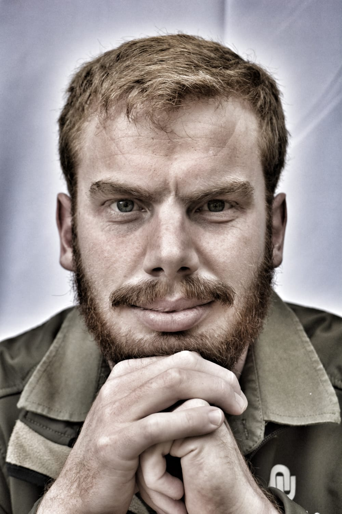

Rudolph van Rensburg
Hey there!
I'm Rudolph, a proud professional blend of techie and farmer and a part-time coffee enthusiast, sowing the seeds of knowledge and cultivating digital solutions. When I'm not busy debugging my own life choices, I’m out trying to grow a digital empire (or some tomatoes), I’m tackling IT problems, making computers do my bidding, and maybe enjoying one too many cups of coffee.
Basically, I’m living proof that tech and dirt can mix!
About Me
Born with a spade in one hand and a laptop in the other, I’ve spent my life straddling two worlds, one full of soil, crops, and nature, and the other full of servers, software, and digital innovation. I'm passionate about merging technology with agriculture to create smarter, more sustainable solutions. Whether it's improving farm management systems or designing tools that help farmers optimise their operations, I believe the future of agriculture is high-tech, data-driven, and sustainable.
My Education
BCom Agriculture Economics and Risk Management
Focuses on analysing agricultural markets, managing financial risks, and enhancing sector profitability. It combines economics, risk management, and sustainability principles to support efficient agribusiness and resource management.
BSc Information Technology
Focuses on programming, system analysis and design, and databases, integrating modern IT developments with modules in statistics, mathematics, accounting, and business management. It addresses IT-related challenges, system development, and entrepreneurship, with an emphasis on designing and delivering computerised systems.
My Skills
 Agriculture Economics:
Agriculture Economics:
Navigating crop prices, supply chains, and market trends with a lighthearted touch. I’ll help you maximise your profits while keeping the stress level down.
 Programming:
Programming:
C#, Python, SQL, and a laundry list of other acronyms that sound way fancier than they are. But hey, I can actually make them work when it counts.
Problem Solving & Debugging:
If there’s a bug, I’ll hunt it down and squash it. And trust me, it’ll be a lot less annoying than a real one in your garden.
 Data Analysis:
Data Analysis:
Turning messy data into clear, actionable insights. It’s like weeding your data garden to make sure the good stuff grows.
Let’s Connect
If you want to talk tech, agriculture, collaborate, or just discuss the best coffee brands, hit me up:
- Email Me: rudolph.vanrensburg@gmail.com
- Call Me: 076 892 0215
Visit My Online Resume
Want to see the nitty-gritty details of my experience and skills? Check out my online resume.